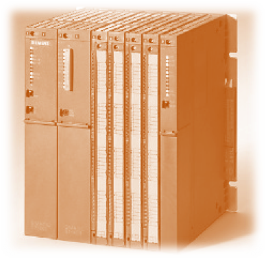
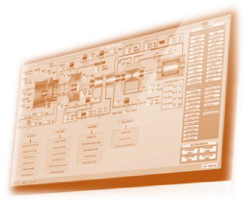

Scope of Work
We are a professional firm with proven expertise in basic and detailed deesign, engineering, construction and commissioning activities of Instrumentation, Control and Automation, Telecommunication, Fire Safety, and Electrical Works for various sectors.
We specialize in...
-
PLC, HMI and SCADA design in all major platforms
Installation Erection Supervision / Commissioning Services
Level 1 Level 2 Automation Solutions
IOT Platforms & Cloud based real-time monitoring and control systems
Steel


-
We hold extensive experience in Wire Rod and Rebar Mills
We have expertise in commissioning services and startup assistance of Re-Bar and Wire-Rod Mills including all supporting and handling systems.
We offer AMCs for all mill equipment, and also provide on call support
We also cater to automation software and hardware revamps
We provide Erection supervision and Site management services
How we can support


-
We can provide complete package Renewable Energy solutions to our customer by undertaking the complete turnkey contract in under our portfolio.
We can additionally provide complete assistance in supporting our customer by undertaking Third Party Package Services where complex control systems and instrumentation are involved which require interface with Main Plant Control System
Hook-Up Services of connecting the piping and process fluids to instrumentation devices.
We provide automation services such as
 -
HMI/SCADA design, reengineering, installation, commissioning etc.
PLC/DCS Logic design, engineering, revamp, installation, commissioning etc.
Level 1 Level 2 automation support
We can also provide complete Site Services by undertaking the below
-
Site management, Erection Supervision, Commissioning Services and Startup Assistance
- Being a local establishment, we can ensure excellent after sales support and provide the customer with single contact AMCs